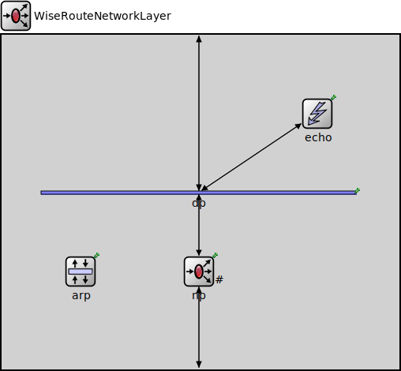

Package: inet.networklayer.wiseroute
WiseRouteNetworkLayer
compound moduleThis module provides a simple network layer.
Usage diagram
The following diagram shows usage relationships between types. Unresolved types are missing from the diagram.
Inheritance diagram
The following diagram shows inheritance relationships for this type. Unresolved types are missing from the diagram.
Parameters
| Name | Type | Default value | Description |
|---|---|---|---|
| interfaceTableModule | string |
Properties
| Name | Value | Description |
|---|---|---|
| display | i=block/fork |
Gates
| Name | Direction | Size | Description |
|---|---|---|---|
| ifIn | input | ||
| ifOut | output | ||
| transportIn | input | ||
| transportOut | output |
Unassigned submodule parameters
| Name | Type | Default value | Description |
|---|---|---|---|
| arp.interfaceTableModule | string |
path to the InterfaceTable module |
|
| arp.addressType | string | "ipv4" | |
| np.interfaceTableModule | string | ||
| np.headerLength | int | 96b |
length of the network packet header (in bits) |
| np.debug | bool | false |
debug switch |
| np.trace | bool | false | |
| np.useSimTracer | bool | false | |
| np.sinkAddress | string |
sink node address |
|
| np.rssiThreshold | double | -50 dBm |
RSSI threshold for route selection |
| np.routeFloodsInterval | double | 0 s |
If set to zero, this node does not initiates route tree building. If set to a value larger than zero, this nodes periodically initiates route tree building. |
| dp.displayStringTextFormat | string | "processed %p pk (%l)" |
determines the text that is written on top of the submodule |
| dp.forwardServiceRegistration | bool | true | |
| dp.forwardProtocolRegistration | bool | true |
Source code
// // This module provides a simple network layer. // module WiseRouteNetworkLayer like INetworkLayer { parameters: string interfaceTableModule; *.interfaceTableModule = default(absPath(this.interfaceTableModule)); @display("i=block/fork"); gates: input ifIn @labels(INetworkHeader); output ifOut @labels(INetworkHeader); input transportIn @labels(ITransportPacket/down); output transportOut @labels(ITransportPacket/up); submodules: arp: GlobalArp { parameters: @display("p=100,300"); } np: WiseRoute { parameters: arpModule = "^.arp"; @display("p=250,300;q=queue"); } echo: EchoProtocol { parameters: @display("p=400,100"); } dp: MessageDispatcher { parameters: @display("p=250,200;b=400,5"); } connections allowunconnected: dp.out++ --> { @display("m=n"); } --> transportOut; dp.in++ <-- { @display("m=n"); } <-- transportIn; np.transportOut --> dp.in++; np.transportIn <-- dp.out++; dp.out++ --> echo.ipIn; dp.in++ <-- echo.ipOut; ifIn --> { @display("m=s"); } --> np.queueIn; np.queueOut --> { @display("m=s"); } --> ifOut; }File: src/inet/networklayer/wiseroute/WiseRouteNetworkLayer.ned
 This documentation is released under the Creative Commons license
This documentation is released under the Creative Commons license